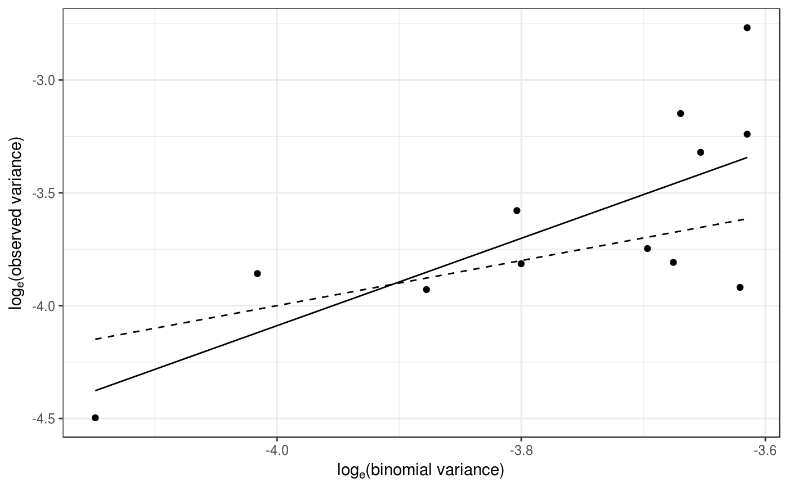
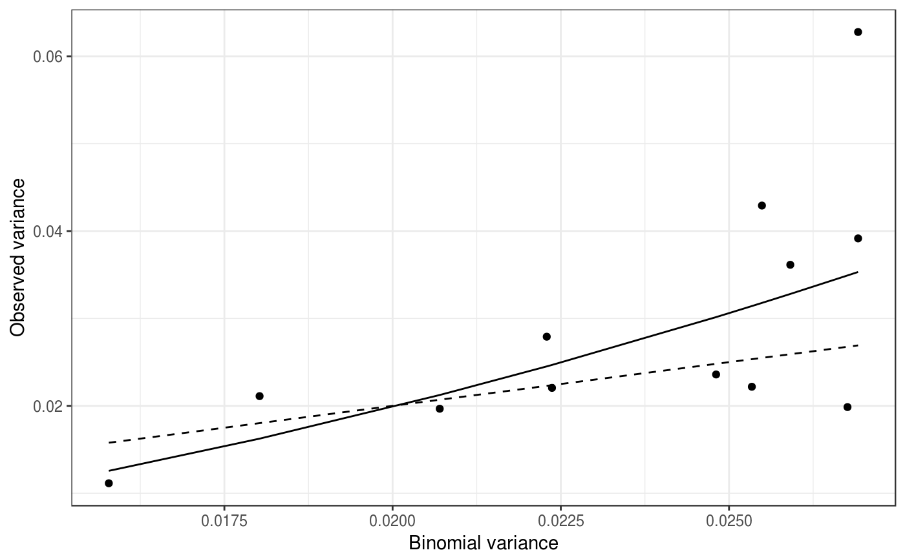

Assesses the overall degree of heterogeneity in a collection of data sets at the sampling-unit scale.
power_law(data, log_base = exp(1), ...)
| data | A list of |
|---|---|
| log_base | Logarithm base to be used. |
| ... | Additional arguments to be passed to other methods. |
A power_law object.
The power law describes the relationship between the observed variance of
individuals within a data set (s^2) and the corresponding variance
under the assumption of no aggregation (s\'^2). It can be expressed
under its logarithmic form as: log(s^2) = log(a) + b log(Y), with:
Y = p in the case of count data (Taylor's power law).
Y = p(1 - p) in the case of incidence data (binary power law).
p corresponds to the mean proportion of recorded individuals in case
of incidence data, and the absolute value in case of count data.
Taylor LR. 1961. Aggregation, variance and the mean. Nature 189: 732–35.
Hughes G, Madden LV. 1992. Aggregation and incidence of disease. Plant Pathology 41 (6): 657–660. doi:10.1111/j.1365-3059.1992.tb02549.x
Madden LV, Hughes G, van den Bosch F. 2007. Spatial aspects of epidemics - III: Patterns of plant disease. In: The study of plant disease epidemics, 235–278. American Phytopathological Society, St Paul, MN.
require(magrittr) my_data <- do.call(c, lapply(citrus_ctv, function(citrus_field) { incidence(citrus_field) %>% clump(unit_size = c(x = 3, y = 3)) %>% split(by = "t") }))#> Warning: To get even clumps of individuals, a total of 380 source sampling units were dropped.# my_data is a list of incidence object, each one corresponding to a given # given time at a given location. my_power_law <- power_law(my_data)#> Warning: Missing cases were dropped.#> Warning: Missing cases were dropped.#> Warning: Missing cases were dropped.#> Warning: Missing cases were dropped.my_power_law#> Binary Power Law: #> Power law analysis for 'incidence' data. #> #> Coefficients: #> (Intercept) log(x) #> 3.653887 1.935628 #>summary(my_power_law)#> #> Call: #> power_law(data = my_data) #> #> Residuals: #> Min 1Q Median 3Q Max #> -0.56432 -0.15156 0.00996 0.16278 0.57520 #> #> Coefficients: #> Estimate Std. Error t value Pr(>|t|) #> (Intercept): log_base(Ar) 3.6539 2.1491 1.700 0.11993 #> log(x): b 1.9356 0.5701 3.395 0.00683 ** #> Ai 38.6245 83.0079 0.465 0.65168 #> ai 0.5493 0.4940 1.112 0.29216 #> AI 0.6327 0.2344 2.700 0.02233 * #> aI 44.4927 40.0118 1.112 0.29216 #> --- #> Signif. codes: 0 ‘***’ 0.001 ‘**’ 0.01 ‘*’ 0.05 ‘.’ 0.1 ‘ ’ 1 #> #> Residual standard error: 0.3255 on 10 degrees of freedom #> Multiple R-squared: 0.5355, Adjusted R-squared: 0.489 #> F-statistic: 11.53 on 1 and 10 DF, p-value: 0.006827 #>plot(my_power_law) # Same as: plot(my_power_law, scale = "log")plot(my_power_law, scale = "lin")